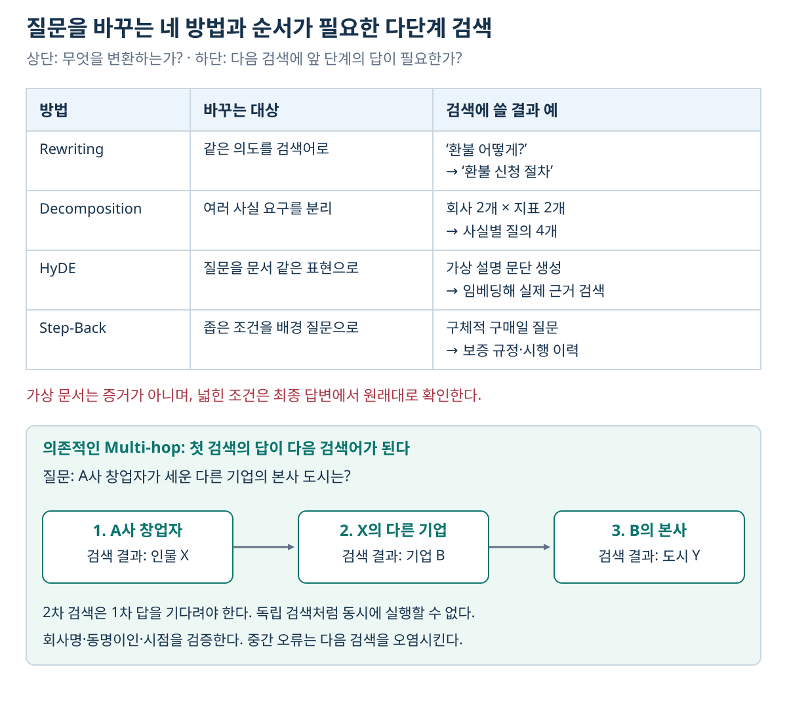
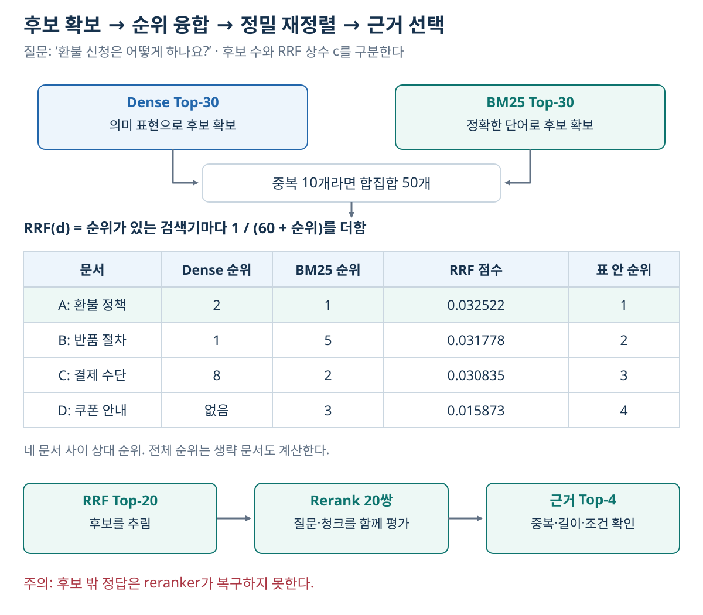

09. 검색 고도화 — 부족한 근거가 어느 단계에서 생기는지 찾기
이전: RAG-Sequence의 학습과 디코딩 · 학습 안내 · 다음: 답변생성과 근거 관리
1. 해결하려는 문제: 검색 결과가 있어도 필요한 답은 없을 수 있다
“A사와 B사의 같은 회계연도 매출과 직원 수를 비교해 주세요”라는 질문은 네 가지 사실과 비교 기준을 요구한다. 질문 벡터 하나로 Top-6를 검색했는데 A사 매출 기사만 여섯 개가 나왔다면, 비슷한 문서는 많이 찾았지만 답변에 필요한 근거를 확보하지 못한 것이다.
검색 고도화는 이런 실패를 질의 표현·후보 확보·순위 정밀화·문맥 복원·반복 검색으로 나눠 해결한다. 모든 기법을 한꺼번에 추가하면 무엇이 좋아졌는지, 무엇이 비용을 늘렸는지 알 수 없다. 기준 시스템과 질문 유형별 평가를 먼저 둔다.
| 위치 | 바꾸는 대상 | 대표 기법 | 추가 비용이 주로 생기는 때 |
|---|---|---|---|
| 인덱싱 | 문서의 검색 표현·구조 | 문맥 prefix, parent-child, 메타데이터 | 문서 등록·변경 시 |
| 검색 전 | 질문 표현 | Rewriting, Decomposition, HyDE, Step-Back | 질의마다 |
| 후보 검색·결합 | 후보 집합과 통합 순위 | BM25+Dense, RRF | 질의마다 |
| 검색 후 | 후보의 정밀 관련성 | Cross-Encoder·LLM reranking | 후보 쌍마다 |
| 근거 부족 판단 후 | 다음 검색 질문·계획 | Iterative·Agentic RAG | 반복 횟수마다 |
문맥 prefix·parent-child·필터의 작동은 07장, 반복 실행의 종료 조건은 11장과 연결한다.
2. 검색 전: 질문을 어떻게 바꿀 것인가?

그림 읽기: 위 표는 검색 전에 만드는 표현이 서로 다름을 보여 준다. 아래 흐름은 ‘X’와 ‘B’를 먼저 알아야 다음 검색을 할 수 있는 의존 관계다. 상단의 분해를 쓴다고 항상 모든 검색이 독립적으로 병렬 실행되는 것은 아니다. 가상 문서는 검색을 돕는 표현이며, 실제 문서를 대신하는 정답 근거가 아니다.
2.1 Query Rewriting — 같은 의도를 검색어로 다시 표현하기
입력 “환불 어떻게?”를 “환불 신청 절차”, “환불 가능 상품”, “환불 처리 기간”처럼 바꿔 검색할 수 있다. 동의어·대상을 보완하거나 대화에서 생략된 대상을 복원하는 목적이다. 여러 rewrite를 만들었다면 각각 검색한 뒤 문서 ID로 합치고 중복을 제거한다.
변환은 원래 조건을 보존해야 한다. “전자책 환불”을 “일반 상품 반품”으로 바꾸면 범위가 달라진다. 원래 질문·변환 질문·검색된 출처를 함께 기록하면 어떤 변환이 잘못되었는지 추적할 수 있다. 사용자 의도가 여러 갈래라면 무리한 추측보다 질문을 되묻는 편이 적절할 수 있다.
2.2 Query Decomposition — 답변에 필요한 사실별로 나누기
비교 질문은 다음 네 하위 질의로 나눌 수 있다.
원래 질문: A사와 B사의 2025 회계연도 매출·직원 수 차이는?
Q1: A사의 2025 회계연도 매출은?
Q2: B사의 2025 회계연도 매출은?
Q3: A사의 2025 회계연도 직원 수와 집계 기준은?
Q4: B사의 2025 회계연도 직원 수와 집계 기준은?
검색 결과를 모았다고 즉시 빼기 계산을 해서는 안 된다. 매출의 통화·단위·연결 범위, 직원 수의 기준일·정규직 포함 여부가 같아야 한다. 설명용 값으로 A사 매출 120억·직원 4,000명, B사 매출 90억·직원 3,500명이 같은 기준이라면 차이는 30억·500명이다. 한 항목의 근거가 없으면 그 차이는 계산할 수 없다고 구분해 답한다.
Rewriting은 같은 질문의 표현을 바꾸고, Decomposition은 여러 사실 요구를 나눈다. 하위 질의가 독립적이면 병렬 검색할 수 있다. 그러나 “A사 창업자가 설립한 다른 회사의 본사는?”처럼 두 번째 대상이 첫 번째 결과에 의존하면, 먼저 창업자와 회사를 찾아야 한다. 독립 하위 질의 목록을 한 번 만드는 것만으로 이 의존성을 해결하지 못한다.
검색 네 번이 반드시 생성 모델 네 번을 뜻하지는 않는다. 설계에 따라 분해 1회·검색 4회·최종 생성 1회일 수도, 하위 답변 생성 4회가 추가될 수도 있다. 검색 호출 수와 LLM 호출 수를 별도로 센다.
2.3 HyDE — 검색용 가상 문서를 만들기
HyDE(Hypothetical Document Embeddings)는 질문으로부터 답이 들어 있을 법한 가상 문서를 생성하고, 이를 임베딩해 실제 코퍼스를 검색한다.
질문 → 가상 설명 문단 생성 → 그 문단의 임베딩
→ 실제 문서 검색 → 실제 근거로 최종 답변
짧은 질문과 긴 문서의 표현 차이를 줄이는 목적이다. 가상 문서의 문장이 최종 답변의 증거가 되는 것은 아니다. 가상 설명이 잘못된 전문 용어·가정을 만들면 실제 검색도 틀린 방향으로 갈 수 있다. 상품 코드·오류 코드처럼 정확한 문자열이 핵심이면 원래 코드 조건을 잃지 않아야 한다.
2.4 Step-Back — 조건을 넓혀 배경을 찾고 원래 질문에 적용하기
지나치게 구체적인 질문에서 한 단계 넓은 배경·원리를 검색한다. 예를 들어 “가상제품 X의 2025년 3월 구매분에 적용되는 보증은?”에 대해 제품 보증 규정과 시행 이력을 먼저 찾는 방식이다. 다만 최종 판단에는 반드시 원래 구매일을 다시 적용한다.
조건을 버린 채 넓은 답만 내면 정확도가 낮아진다. 예를 들어 박사 학위 취득 연도 하나만으로 특정 월의 실제 재학 여부가 완전히 증명되는 것은 아니다. 시점 추론에는 재학 기간·휴학·소속 변경 등 필요한 근거를 확인해야 한다. “관련 배경을 찾았다”와 “세부 질문의 답이 입증되었다”를 구분한다.
| 기법 | 출력 | 맞는 실패 유형 | 주의할 실패 |
|---|---|---|---|
| Rewriting | 같은 의도의 검색 표현 | 말줄임·동의어·모호한 검색어 | 의도·조건 변경 |
| Decomposition | 여러 사실 질의 | 비교·복합 요구 | 필요한 사실 누락, 의존성 무시 |
| HyDE | 검색용 가상 문서 | 질문과 문서의 표현 차이 | 생성 가정에 검색이 끌려감 |
| Step-Back | 일반화된 배경 질문 | 세부 문구가 직접 일치하지 않음 | 원래 시점·조건을 복원하지 못함 |
이 표는 고정 처방이 아니다. 짧은 질문이라고 언제나 HyDE가 필요한 것은 아니며, 충분한 기준선 검색 결과가 있으면 추가 호출을 생략할 수 있다.
3. 후보 확보: BM25와 Dense의 결과를 결합하기
BM25는 단어 일치와 빈도에, Dense Retrieval은 학습된 의미 표현에 의존한다. “계정 비활성화”와 “아이디 잠그기” 같은 표현 차이는 Dense가 보완할 수 있고, “ERR-731” 같은 식별자는 BM25가 보완할 수 있다. 두 방식 모두 데이터·학습·토큰화에 따라 실패한다. 따라서 후보 집합의 상호 보완성을 확인한다.
BM25 점수 12와 cosine similarity 0.8을 그대로 더하면 숫자 범위가 큰 쪽이 지배할 수 있다. RRF(Reciprocal Rank Fusion)는 원점수 대신 각 검색기의 순위를 사용한다.
L_r는 검색기 r의 유한 후보 목록, 순위는 1부터 센다. c는 안정화 상수다. 다음 예제에서는 60을 사용한다. 이 장에서는 검색 후보 수 K와 혼동하지 않도록 상수 이름을 c로 쓴다. 목록에 없는 문서는 그 검색기에서 0점을 기여한다.
계산 예제: 원점수 없이 순위만 합치기
두 검색기에서 일부 문서가 다음 순위에 있다고 하자. 표에 보이지 않는 다른 문서도 목록에 있어 순위 5·8이 가능하다. 중간 계산을 반올림하지 않고 마지막에 소수 여섯 자리로 표시한다.
| 문서 | Dense 순위 | BM25 순위 | 계산, c=60 |
RRF |
|---|---|---|---|---|
| A: 환불 정책 | 2 | 1 | 1/62 + 1/61 |
0.032522 |
| B: 반품 절차 | 1 | 5 | 1/61 + 1/65 |
0.031778 |
| C: 결제 수단 | 8 | 2 | 1/68 + 1/62 |
0.030835 |
| D: 쿠폰 안내 | 없음 | 3 | 0 + 1/63 |
0.015873 |
표에 나온 네 문서 사이의 상대 순위는 A → B → C → D다. 전체 융합 순위는 생략한 문서들의 점수까지 계산해야 정할 수 있다. 예를 들어 다른 문서 X가 Dense 3위·BM25 4위라면 1/63+1/64≈0.031498로 B와 C 사이에 들어간다. B가 Dense 1위여도 양쪽에서 모두 상위인 A가 높다. 다만 RRF는 정답 판단기가 아니다. 두 검색기가 같은 잘못된 문서를 높게 주면 잘못된 합의도 강화된다.
c가 작으면 상위 몇 순위의 차이를 크게 반영하고, 커지면 순위 차이가 완만해진다. 여러 번 비슷하게 rewrite한 질의의 검색 결과를 전부 독립 투표처럼 넣으면 특정 의도에 과도한 가중치가 생길 수도 있다. 순위 기반이라 점수 정규화가 필요 없는 것이지, 후보 수·검색기 가중치·상수에 대한 검토가 전혀 필요 없다는 뜻은 아니다. 동률 처리도 문서 ID 등 재현 가능한 규칙으로 정한다.
Weighted Sum은 점수 정규화와 가중치를 사용해 원점수의 차이를 보존할 수 있고, 학습형 fusion은 관련성 라벨로 결합을 학습한다. 더 많은 튜닝·학습 데이터가 필요하므로 단순한 RRF 기준선과 비교한다.
4. 정밀화: Reranker는 이미 찾은 후보만 다시 본다

그림 읽기: 위에서 각 검색기의 후보를 합치고, 중간 표에서 순위 역수 합으로 후보 순서를 만든다. 아래에서는 Top-20을 정밀하게 평가해 근거 Top-4를 고른다. 30·20·4는 서로 다른 단계의 개수이고 c=60은 RRF의 안정화 상수다. 표는 합집합의 일부 문서만 보여 주며 점수가 높은 문서가 반드시 정답인 것은 아니다.
1차 검색은 많은 문서 중 가능한 후보를 빠르게 모은다. Cross-Encoder reranker는 (질문, 청크)를 함께 인코딩해 정밀 점수를 만들고 후보를 재정렬한다. 생성 모델을 이용해 후보별 또는 목록별 판단을 할 수도 있다.
Dense Top-30 + BM25 Top-30
→ 문서 ID 기준 합집합, 최대 60개
→ RRF로 후보 Top-20
→ rerank 20쌍
→ 근거 Top-4와 문맥 확장
→ 토큰 예산 확인 후 생성
겹치는 문서가 10개면 처음 합집합은 50개다. 후보 Top-20을 만들었다면 Cross-Encoder는 20개의 질문·문서 쌍을 평가한다. 1차 후보에서 빠진 정답은 reranker가 되살릴 수 없다. 후보를 늘려 recall을 높일 수 있지만 재정렬 비용·지연도 커진다. Reranker 점수 역시 별도로 보정하지 않았다면 “정답일 확률”로 읽지 않는다.
| 방식 | 주된 장점 | 주요 비용·한계 |
|---|---|---|
| Cross-Encoder | 질문과 후보 사이의 세밀한 상호작용 | 후보별 모델 연산, 입력 길이 제한 |
| Rerank 서비스 | 모델 운영을 위임할 수 있음 | 외부 전송·호출 비용·서비스 제약 |
| LLM 판단 | 질문의 조건·비교 기준을 설명에 반영 가능 | 토큰 비용, 순서 편향, 출력 안정성 |
후보 검색 K_retrieve, 재정렬 대상 K_rerank, 생성에 쓰는 K_context를 분리해 기록해야 한다. “Top-k를 바꿨다”만으로는 무엇이 바뀌었는지 알 수 없다.
5. Multi-hop은 왜 한 번의 검색으로 어려운가?
필요한 사실이 두 문서에 분산되어 있으면 둘 다 검색해야 한다. 각 근거가 검색될 확률을 설명용으로 0.8이고 서로 독립이라고 가정하면, 둘 다 얻을 확률은 0.8×0.8=0.64다. 실제 검색 사건은 독립적이지 않지만, 개별 근거의 높은 recall이 전체 질문의 성공을 보장하지 않는다는 점을 보여 준다.
더 어려운 것은 두 번째 질의가 첫 번째 답에 의존하는 경우다.
질문: 가상기업 A의 창업자가 설립한 기업 B의 본사 도시는?
1차 검색: A의 창업자 → 인물 X
2차 검색: X가 설립한 다른 기업 → B
3차 검색: B의 본사 → 도시 Y
검증: 서로 다른 동명이인·기업·시점을 혼합하지 않았는가?
반복 검색, 관계 그래프, 도구 사용, 긴 문서 전체 입력은 서로 다른 보완책이다. 그래프는 엔티티·관계 추출 비용이 들고, 긴 입력은 비용과 근거 위치의 영향을 받으며, 반복 검색은 잘못된 중간 답이 다음 검색을 오염시킬 수 있다. 숫자 전체 집계에는 SQL·계산 도구가, 날짜 비교에는 명시적인 날짜·버전 조건이 더 직접적인 해결책일 수 있다.
6. 비교 실험의 조건과 지표를 읽기
다음은 검색 구성의 효과를 읽는 과거 보고 사례다. 데이터·모델·지표의 조건을 함께 적었으며 이 교재에서 재실행한 결과는 아니다. 목적은 제품의 현재 성능 순위가 아니라, 무엇을 고정하고 어떤 지표가 달라졌는지 해석하는 데 있다.
- 코퍼스: MultiHopRAG의 영문 뉴스 기사 609개.
- 질문: 전체 2,556개 중 층화 표본 250개. Comparison 84, Inference 80, Temporal 57, Null 29.
- 임베딩: BGE-small-en-v1.5, 384차원. BM25와 RRF를 조합하며 검색기는 각각 30개 후보,
c=60, 최종 검색 Top-6. - 생성·분해·judge: 사례에서 Haiku 4.5 사용. 정확도는
(correct + 0.5×partial)/n. - 아래 세 구성 비교는 sentence-aware 청킹을 고정했다.
| 구성 | 사례 Recall@6 | 사례 MRR | 사례 답변 Accuracy |
|---|---|---|---|
| Dense | 52.1% | 0.725 | 37.8% |
| Hybrid + RRF | 63.6% | 0.779 | 50.6% |
| Hybrid + 분해 | 70.8% | 0.737 | 61.6% |
Dense에서 Hybrid로 답변 정확도가 12.8%p, 분해 추가로 11.0%p 상승했다. 상대 증가율과 퍼센트포인트를 구별한다. 분해 후 recall은 높아졌는데 MRR은 낮아졌다. 첫 정답을 얼마나 빨리 찾는가와 필요한 여러 근거를 얼마나 모으는가는 다른 측정이기 때문이다.
Temporal 정확도는 세 구성 모두 44.7% 이하였다. 생성기와 judge가 같은 계열이고 전체 평가가 아닌 표본이라는 한계가 있다. Contextual Retrieval·Reranking은 이 자체 파일럿에서 제외되었다. 따라서 이 표로 두 기법의 실제 효과를 주장할 수 없다.
개선율의 단위도 구별해야 한다. 예를 들어 Top-20 실패율이 5.7%에서 1.9%로 줄었다고 하자. 이는 절대 3.8%p 감소, 상대 약 66.7% 감소다. RAG 답변 정확도가 67%p 오른다는 뜻이 아니다. 서로 다른 데이터·모델·지표의 개선 수치를 더해서 예상 성능을 계산하지 않는다. 복합 질문이 어느 비율일 때 반복 검색을 도입할지도 보편적인 임계값보다 자신의 질문 분포·허용 지연·실패 비용으로 결정한다.
7. 변경을 선택하는 순서
- 실패 질문을 분류한다. 정확 문자열 누락인가, 표현 차이인가, 근거 분산인가, 잘못된 순위인가?
- 기준선의 청킹·필터·버전·후보 수를 고정해 기록한다.
- 한 가지 변경 또는 명확한 단계 조합을 적용한다.
- 질문 유형별 검색·답변 지표와 보류율을 비교한다.
- 추가 호출 수·토큰·p95 지연·인덱싱 비용을 함께 비교한다.
예를 들어 코드 검색 실패에는 BM25 후보 추가를, 후보에는 정답이 있지만 순위가 낮은 경우에는 reranking을 먼저 실험할 수 있다. API 지연·가격·제품 성능은 실행 조건에 따라 달라진다. 현재 시스템에서 직접 측정한 값과 예시 조건을 구별한다.
8. 스스로 확인하기
- RRF의
c=60과 생성에 넣는 Top-6는 같은 설정인가? - 예제 B가 Dense 1위인데 A보다 낮은 이유는 무엇인가?
- Reranker를 아주 좋은 모델로 바꾸면 후보에서 누락된 문서를 찾을 수 있는가?
- 가상 문서를 실제 코퍼스 대신 근거로 인용해도 HyDE의 목적에 맞는가?
- MRR이 낮아졌는데 답변 정확도가 높아지는 것이 가능한가?
학습용 해설
- 아니다.
c는 순위 차이를 완화하는 상수이고, Top-6는 반환할 문서 수다. 문서 수와 상수는 별도 기록한다. - A는 2위·1위, B는 1위·5위여서 두 역순위 합은 A가 더 크다.
0.032522 > 0.031778이다. - 아니다. Reranker는 입력받은 후보 안에서만 재평가한다. 후보 확보 recall을 따로 점검해야 한다.
- 아니다. 가상 문서는 검색 표현이다. 최종 근거는 검색된 실제 문서여야 한다.
- 가능하다. 첫 정답 순위가 조금 낮아져도 여러 필수 근거가 더 잘 모이면 답변은 좋아질 수 있다.